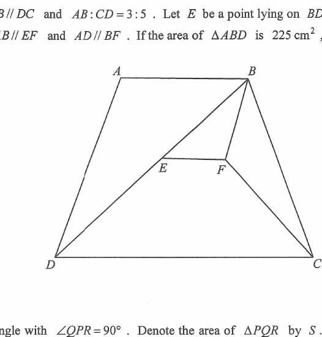

AB // DC (bases)Diagonal BD, BF // ADEF // ABE on BD (BE:ED = 2:3)F (BF // AD)Shaded: CDEF
Question
In the figure, \(ABCD\) is a trapezium with \(AB // DC\) and \(AB:CD = 3:5\).
Let \(E\) be a point on \(BD\) such that \(BE:ED = 2:3\).
It is given that \(AB // EF\) and \(AD // BF\).
If the area of \(\triangle ABD\) is \(225\ \text{cm}^2\), then the area of the trapezium \(CDEF\) is
A \(222\ \text{cm}^2\)
B \(260\ \text{cm}^2\)
C \(279\ \text{cm}^2\)
D \(285\ \text{cm}^2\)

Figure (original exam diagram)
Solution
STEP 1 · Set up variables
Relate \(k\) and \(h\) using the area of \(\triangle ABD\)
Area of a Triangle\(\tfrac{1}{2}(3k)(h)=225\)Base \(AB=3k\) with height \(h\) gives \(kh=150\), which is reused in the last step.
Let \(AB = 3k\), \(CD = 5k\), and let \(h\) be the height of the trapezium (distance between the parallel bases).
Take \(AB\) as base of \(\triangle ABD\); its height is \(h\).
Key product \(kh = 150\) will be reused at the end.
STEP 2 · Locate \(E\) on \(BD\)
Section formula with \(BE:ED = 2:3\)
Section Formula (Internal Division)\(E=\tfrac{3}{5}B+\tfrac{2}{5}D\)\(BE:ED=2:3\) puts \(E\) two-fifths of the way from \(B\) to \(D\), i.e. at height \(\tfrac{2h}{5}\).
Place coordinates: \(A(0,0)\), \(B(3k,0)\), \(D(d,-h)\), \(C(d+5k,-h)\).
Since \(BE:ED = 2:3\), \(E\) divides \(BD\) in ratio \(2:3\) from \(B\), so
\[
EF=\left(3k+\tfrac{2d}{5}\right)-\left(\tfrac{9k}{5}+\tfrac{2d}{5}\right)
=\tfrac{6k}{5},
\]
\[
\text{height between } EF \text{ and } DC \;=\; h-\tfrac{2h}{5}=\tfrac{3h}{5}.
\]
Notice the \(d\) cancels — the answer does not depend on the slant.
STEP 4 · Area of trapezium \(CDEF\)
Apply the trapezium area formula
Area of a Trapezium\(A=\tfrac{1}{2}(a+b)h\)Parallel sides \(5k\) and \(\tfrac{6k}{5}\) with height \(\tfrac{3h}{5}\) give \(\tfrac{93}{50}(150)=279\).
The parallel sides of \(CDEF\) are \(CD = 5k\) and \(EF = \tfrac{6k}{5}\), with height \(\tfrac{3h}{5}\):
Question. In the figure, \(ABCD\) is a trapezium with \(AB // DC\) and \(AB:CD=2:5\). \(E\) is a point on \(BD\) such that \(BE:ED=1:2\), and \(AB // EF\), \(AD // BF\). If the area of \(\triangle ABD\) is \(180\text{ cm}^{2}\), find the area of the trapezium \(CDEF\).
Show the worked solution
Step 1. Let \(AB=2k\), \(CD=5k\) and let \(h\) be the height. Taking \(AB\) as base, \(\tfrac{1}{2}(2k)(h)=180\), so \(kh=180\).
Step 2. \(BE:ED=1:2\) gives \(E=\tfrac{2}{3}B+\tfrac{1}{3}D\), so \(E\) is at height \(\tfrac{h}{3}\) below \(AB\), i.e. \(\tfrac{2h}{3}\) above \(DC\).
Step 3. \(EF // AB\) puts \(F\) at the same level, and \(BF // AD\) gives \(F=B+\tfrac{1}{3}(D-A)\); hence \(EF=2k-\tfrac{4k}{3}=\tfrac{2k}{3}\).
Step 4. Area of \(CDEF=\tfrac{1}{2}\left(5k+\tfrac{2k}{3}\right)\left(\tfrac{2h}{3}\right)=\tfrac{17}{9}kh=\tfrac{17}{9}(180)=340\text{ cm}^{2}\).